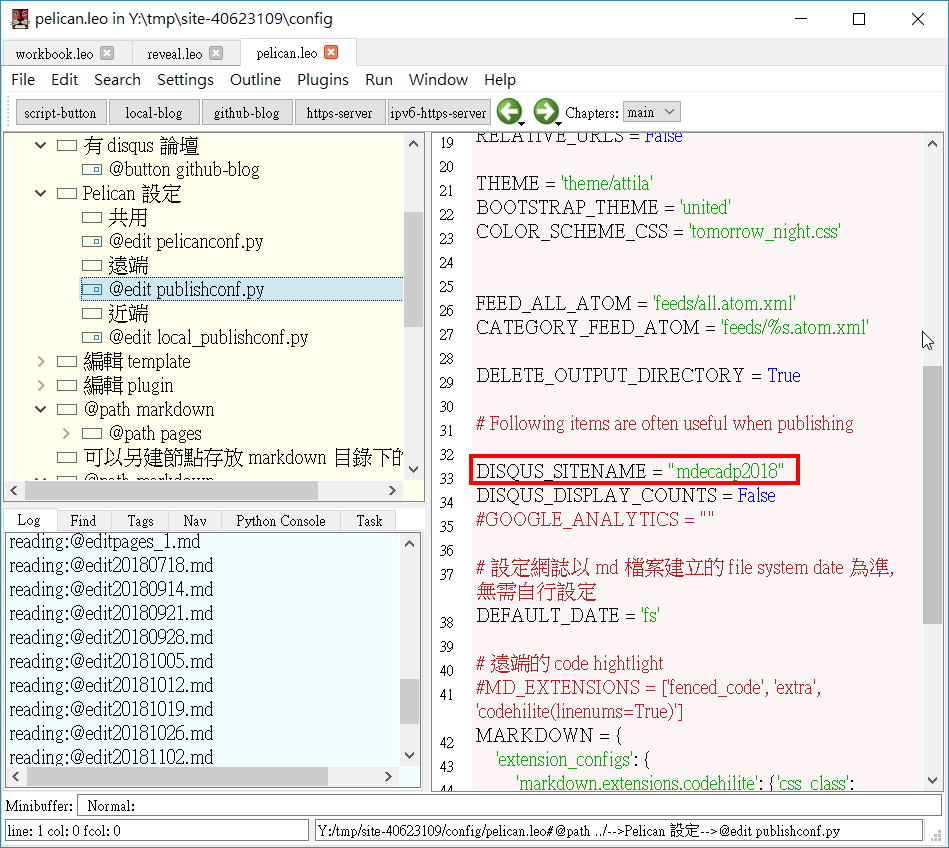

pelican 網誌 << Previous Next >> 組員心得
Week1~Week9
組員上課相關內容
Week1
1.帶紙本筆記、耳機和隨身碟，準備開始上這門課。
2.領取期中作業，並將相關網站、blog 和簡報整理好，這樣才能進行每週更新。
3.關於 pelican.leo (blog) disqus 的設定 :(參考網站)
若要啟動 blog disqus ，可以修改 config/pelican.leo 中, "Pelican 設定"節點下方的 @edit publishconf.py內容，指定 DISQUS_SITENAME:
DISQUS_SITENAME = "mdecadp2018"

學員 : 40623109
Week2
Computer Aided (輔助), Guided (導引), Automated (自動), Autonomous (自主) Design
2.登入 Github ，到 Settings 中將內定 branch 改為 gh-pages，在進行 git clone 至近端，如果是在尚未更改 branch時就 git clone ，那可以使用 git branch 檢查分支，在 git checkout gh-pages 將工作目錄轉為 gh-pages 的版本。
3.如果在操作使用上遇到問題，可以登入 github ，直接留在各週的 Issues 下方的 comments。
Week3
1.確認個人倉儲、網站、網誌和簡報是否已經都整理好，知道期中自評成績的重點在於我們平日所做的更新畫圖上傳影片。
2.進行git 的基本練習，參考網站
Week4
1. 重新整理倉儲
2. 投影片解說
3. 了解 onshape，並練習使用，參考網站
Week5
1. 新版 p37
2. onshape畫圖影片
Week6
1. 將倉儲準備完畢，並定時的更新
2. 開始尋找成員(6人一組)，去完成期中之後的作業。
3. youtube影片連結
在github issues 中加入 youtube video 連結: 參考網站
YouTube Videos
They can't be added directly but you can add an image with a link to the video like this:
[](http://www.youtube.com/watch?v=YOUTUBE_VIDEO_ID_HERE)
Week7
1.有同學遇到 github 無法登入，參考網站
2.安裝 Fossil SCM，並下載 Ubuntu 18.04 with Stunnel 4 與 Fossil SCM 2.5 安裝轉出壓縮檔
Week8
1.找6人為一組準備期中後的專題
3.更新 flaskapp.py，到google上打cmsimfly github，用git clone指令複製cmsimfly github，完成後複製 flaskapp.py並貼上覆蓋自己的資料夾內部的 flaskapp.py。
Week9
期中考週
1.進行專題分組，由組長建立好 teams 組員加入就好了
2. 打自評成績
pelican 網誌 << Previous Next >> 組員心得